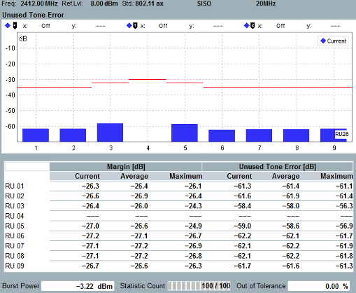

The view comprises a diagram and a table of statistical results of unoccupied tones for an HE TB PPDU signal.

The unused tone error measures the EVM of unoccupied tones averaged over 26 subcarriers (2 MHz). The blue bars correspond to the current resource unit (RU) distribution. The occupied subcarrier in this example is the fourth RU within 26-tone RUs and it is excluded from this measurement.
The limit of the occupied carrier is set as "TB high power" if the "Transmit Power" for unused tone error is set to high. The limit of the occupied carrier is set as "TB low power" if the "Transmit Power" for unused tone error is set to low. See "Modulation Limits 802.11ax". The limit line for unoccupied subcarriers is calculated based on the limit of occupied carrier (used tone error) according to IEEE 802.11ax, formula 28-124.
The "Margin" table below the diagram contains values which are relevant for the limit check. The "Margin" values indicate the vertical distance between an estimated limit line and the result trace.
A positive margin indicates that the limit is exceeded. Margin results are displayed for the current, average and maximum trace.
"Unused Tone Error" indicates an unoccupied subcarrier EVMRMS for each unoccupied 26-tone RU across detected HE TB PPDU.
For additional information, refer to "Common View Elements".